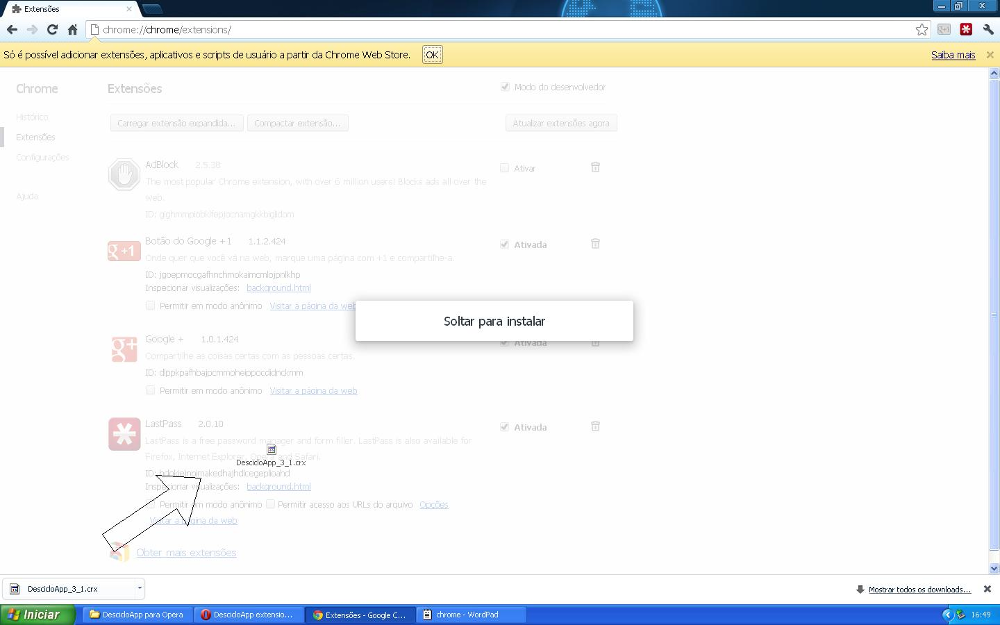
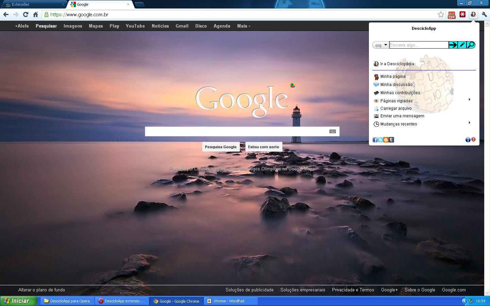

DescicloApp
1. Abra o Google Chrome
2. Copie http://goo.gl/Mkmrr e cole na barra de endereços
3. Dê enter
4. Você vai receber uma mensagem de erro dizendo que só instalar na Chrome Web Store
5. Depois digite chrome://chrome/extensions/ na barra de endereços
6. Arraste o arquivo da extensão para essa página desse jeito:

7. Dê permissão para instalar a extensão (aqui o motivo para ela não estar na Chrome Web Store)
8. Pronto :)
